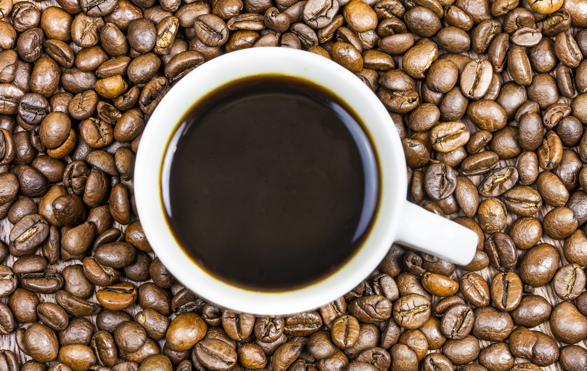
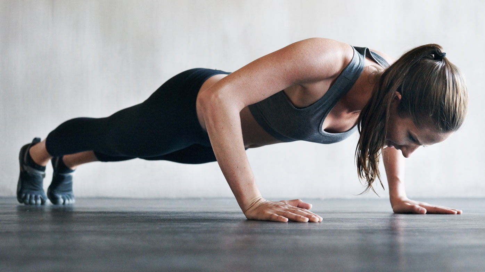

It’s definitely possible to have too much caffeine. On top of that, in certain situations — like coffee on an empty stomach — can give caffeine a bad rap, even when it’s really the other things at play causing the problems.
The FDA says people shouldn’t have more than 400 mg of caffeine each day. That’s roughly equal to four eight-ounce cups of coffee...
Is going over this cap really a big deal? If you only do it every once in a while, probably not. But if you do it too much, you risk caffeine toxicity.
Here are some of the side effects of excess caffeine:
- Jitters
- Anxiousness
- Dehydration
- Heart Palpitations
- An upset stomach
- And many more..
Clearly,too much caffeine can cause a lot of problems that leave you feeling way worse than you started. To help avoid these nasty side effect, I recommend:
- Mixing in other stuff with caffeine.Consider what you consume along with your caffeine. I love matcha green tea because it has caffeine, but it also has L-theanine, which has a calming effect. Or you could always add some ashwagandha into the mix to ward off jitters.
- Timing your consumption. When you have coffee or tea on an empty stomach, it can upset your digestive system. If you start your day with caffeine, eat something with it. This could be as simple as a quick shake with our protein powder or a banana. Then, mind your caffeine intake at night. It can take your body as long as six hours to metabolize even half of the caffeine you’ve consumed. If you’ve been having sleep problems, you might be able to blame your afternoon consumption. Some people are more sensitive to caffeine than others, so pay attention. If cutting out caffeine after noon helps you get good sleep, that’s well worth it.
- Avoiding too much at once. Too much caffeine can literally be toxic. And even when you don’t reach potentially health-hazardous levels, a lot all at once is often behind the jitters or nausea. Stick with about 75-160 mg at a time. That’s roughly one or two eight-ounce cups of coffee. Wait for about half an hour and see how you feel. If you’re still pooped, you can always have more. But there’s no way to undo too much caffeine other than to wait it out (yikes).
- Getting smart about where your caffeine comes from. Some caffeine sources (energy drinks and pre-workout) have so much that your risk for side effects is already super high. To give your body a boost without having to pay for it, look to natural caffeine sources like matcha green tea, smaller cups of coffee or our new Pep Rally Energy Boost!

With much of the world in quarantine, home workouts have never been more popular. As a result, my inbox has been flooded with questions from people who are confused about what to do at home. With that in mind, let me use this time to remind you that the work itself does not need to be complicated. Almost anything will work if you are willing to work. It really is that simple.
The Basics
Staying fit should not be confused with rocket science. Instead, focus the bulk of your time and energy towards tried-and-true exercises such as pushups, pull-ups, squats, lunges, rollouts, etc. Sprinkle in some creativity on occasion to avoid staleness, and you’ll be set for life. Exercise does not need to be more complicated than that.
Furthermore, don’t be fooled to believe that you will outgrow the basics. The fundamentals have no expiration date. I couldn’t tell you how many times I’ve seen world class athletes challenged with so-called basic exercises. As I’ve said before, how you do what you do matters more than what you do. There are always ways to make simple exercises more difficult.
Remain Creative
I’ve performed pushups for over 30 years. Some might say it’s time for me to move on. I don’t see it that way though. I have always enjoyed pushups and I continue to benefit from the exercise. Therefore, I see no reason to abandon the movement. Instead, I simply modify them on occasion to suit my needs.
Beyond Pushups and Rollouts
To no surprise, pushups and rollouts are two of my favorite exercises. With that said, they aren’t the only movements that can be easily modified to make more (or less) challenging. If you wish to increase the difficulty of a bodyweight movement, here are a few (of many) options.
- Work with higher reps and/or additional sets
- Limit rest between sets
- Add a weighted vest
- Vary the angle of the exercise
- Vary the speed/tempo of the exercise
- Add an isometric component to the exercise(ex.here)
- Group multiple exercises into continuous circuits(ex.here)
- Work with one side at a time
Final Thoughts
If your gym has been closed by COVID-19 and you’re forced to train at home with minimal equipment, there’s no need to worry. There’s still plenty of ways to challenge yourself with little or nothing. Hard work can be applied to almost anything. And with a little creativity, you’ll never run out of ideas or challenges.
Thus, I urge you to maintain control of what can be controlled. No one knows what the future will bring, but we can all work hard to remain healthy and strong. Don’t let the chaos around you distract you from prioritizing your own well-being. It must remain a priority. Your body and mind will thank you.
Stay safe and strong!

Push-ups are one of the most important exercises you can do, but they’re difficult for many people. This is why we are discussing how to get better at push-ups in this article.
So, how many push-ups can you do? Is your answer zero? That’s okay! You have to know your starting point so you can brag about how many you can do a month from now.
I know some of you think the idea of being able to do 50 push-ups seems as likely as spotting a UFO, but it’s not as hard as you think. If you are new to push-ups, I will give you a quick progression to build up your strength. If you are already proficient in your push-up regimen check out my push-up variations to amp up your game.
How to do more Push-Ups
The key to being able to do more push-ups is starting slow and continuing to practice. I’ll say it again, the key to getting better at push-ups is practice!
Practice Push-up Modifications
If you’re not ready to start with a standard push-up (that’s okay!), you can start with these push-up modifications. All of these modifications will allow you to begin where you are at and once you master one, then try the next one.
1. Wall Push Ups

- Set your hands on a wall at a width that’s wider than shoulder-width apart.
- Walk backward with your feet away from the wall until your arms are fully extended and you are leaning into the wall.
- Keeping the rest of your body in a straight line, steadily lower yourself towards the wall until your nose almost touches the wall, and push back up to the starting position.
2. Incline Push Ups

- Place your hands onto a sturdy table, chair or bench. If you start out with something as tall as a kitchen table, keep decreasing the incline every few days moving down to a chair or a step
- Following the regular push-up form (full body plank on an inclined surface) do as many in a row as you can with good form.
- Practice for a week or two adding a few reps each time. Once you can do 30-50 of these, progress to the modified push-up.
3. Modified Push-Up

- Begin with hands on the floor, wrists below your shoulders, glutes and abs engaged, knees on floor.
- Do a full range of motion with your chest coming down to the floor and then push back up.
- Again, add a few every day and once you are up to doing at least 30-50 in a day, you are ready to attempt the full push-up on your toes!
Ready for the real deal? Make sure to practice proper push-up form
How to do a Push-Up

When it comes to push-ups, your form is crucial. Each push-up needs to be a full range of motion.
- Set your hands slightly wider than shoulder-width apart, hands facing forward.
- Set your feet directly behind you at a comfortable position (together or slightly separated). The further apart your feet are, the more stable you will be until you are able to build your balance up enough to put your feet together.
- Straighten your body from the top of your head down through your heels. Your butt should stay in line with your legs and back, never up in the air. Your abs engaged and your shoulders over your wrists. (Basically a full-body plank position.) Keep your neck neutral, don’t drop your head or crank it back.
- Lower your body with your glutes and abs contracted until your chest touches or comes close to the ground. Let your elbows naturally bend slightly back and keep from scrunching your shoulders into your neck. Push yourself back into the starting position. Try to keep your core body steady. Don’t sag through the low back or push your butt way up in the air.
Congratulations, that is a proper push-up!Do as many as you can until you start to feel your form slip. Only count good form and STOP when your form begins to cave.